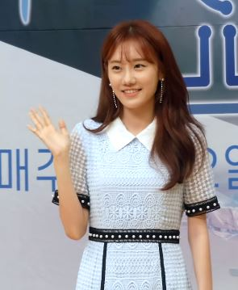

엄마가 미쳤어요 인물관계도·몇부작·재방송 시간 한눈에 정리

(이미지 출처: Pexels, 무료 라이선스 — 드라마와 관계없는 일반 이미지입니다)
저녁 8시 반, 새로 시작한 KBS1 일일드라마 보시다가 "저 사람이 누구 엄마였더라?" 하신 적 없으세요? 첫 주에는 인물이 한꺼번에 쏟아져서 헷갈리기 쉽습니다. 방송 정보와 인물 관계를 한 번에 볼 수 있게 정리해 두었습니다.
기본 방송 정보
| 항목 | 내용 |
|---|---|
| 채널 | KBS 1TV |
| 본방송 | 월~금 저녁 8시 30분 |
| 재방송 | 일요일 오후 1시 40분, KBS1 (10월 첫 주 편성표 기준) |
| 첫 방송 | 2026년 9월 28일(월) |
| 분량 | 120부작 예정 |
120부작이면 주 5회 방송 기준으로 반년 가까이 이어지는 긴 호흡의 드라마입니다. 평일 저녁을 놓치셨다면 일요일 낮 KBS1 편성을 확인해 보세요. 다만 재방송 시간은 주마다 조금씩 달라질 수 있어, KBS 공식 홈페이지 편성표가 가장 정확합니다.
어떤 이야기인가요
평생 가족만을 위해 살아온 엄마와, 평생 자기 자신만을 위해 살아온 엄마. 성격이 정반대인 두 엄마와 서로 원수처럼 지내는 자식들이 얽히며 벌어지는 가족 성장기입니다. 여기에 어린 시절 사고로 부모를 잃은 인물이 23년 전 그 사고의 진실을 쫓으면서 숨겨진 가족의 비밀이 하나씩 드러나는 줄기도 함께 흘러갑니다.
예고편으로 먼저 보기
어떤 분위기의 드라마인지 궁금하시면 KBS가 공식 유튜브에 올린 예고편부터 보셔도 좋습니다.
등장인물과 배우
조미미네
- 조미미김희정평생 자식들을 위해 살아온 엄마
- 강강남강은탁조미미의 장남
- 강대치김종훈조미미의 차남

강다미정민아조미미의 막내딸
강학성네
- 강학성이한위조미미의 전남편
- 박지영조미령강학성의 현재 부인
- 최순덕양희경조미미의 전 시어머니
전진희와 주변 인물
- 전진희강경헌평생 자신을 위해 살아온 엄마
- 차승윤동하세계적인 패션 디자이너, 어린 시절 사고로 부모를 잃음
- 황금순김영옥황금캐피탈 창업주
주요 관계
- 조미미강학성이혼한 전 부부
- 강학성박지영지금의 부부
- 조미미최순덕전 시어머니와 며느리
- 조미미전진희성격이 정반대인 두 엄마
- 강다미전진희예고편부터 갈등 조짐
공개된 보도자료 기준으로 정리했고, 방송이 진행되면 이어서 고쳐 둡니다. 사진이 없는 인물은 자유 라이선스 사진이 확인되지 않은 경우입니다.
사진: 강은탁 — SJ, CC BY 4.0, 위키미디어 공용 · 정민아 — 뉴스인스타, CC BY 3.0, 위키미디어 공용 · 조미령 — NewsInstar, CC BY 3.0, 위키미디어 공용
이 밖에 남성진, 공정환, 안연홍, 김나은 등도 출연합니다.
인물관계도, 이렇게 보면 쉽습니다
중심은 조미미네 집입니다. 조미미는 남편 강학성과 헤어졌고, 강학성은 지금 박지영과 새 가정을 꾸렸습니다. 자식 셋(강강남·강대치·강다미)은 조미미 쪽 식구이고, 전 시어머니 최순덕과의 관계도 이야기의 한 축입니다.
맞은편에는 자기 인생이 먼저인 엄마 전진희가 있습니다. 두 엄마 집안의 자식들이 부딪히면서 갈등이 커지는 구조라, 초반에는 "조미미 쪽 / 전진희 쪽"으로 나눠서 보시면 훨씬 덜 헷갈립니다. 부모를 잃은 디자이너 차승윤이 23년 전 사고의 진실을 쫓는 이야기도 함께 눈여겨볼 대목입니다.
자주 묻는 질문: 엄마가 미쳤어요는 총 몇부작인가요? 120부작으로 기획됐습니다. 주 5회 방송이라 대략 반년 정도 방영되는 셈이고, 방송 사정에 따라 결방이 생기면 종영 시점이 조금 늦어질 수 있습니다.
자주 묻는 질문: 몇 시에 하나요? 월요일부터 금요일까지 저녁 8시 30분, KBS 1TV에서 방송합니다. 9시 뉴스 바로 앞 시간대입니다.
자주 묻는 질문: 엄마가 미쳤어요 재방송은 언제 하나요? 10월 첫 주 편성표 기준으로 일요일 오후 1시 40분에 KBS1에서 재방송이 잡혀 있습니다. 주마다 바뀔 수 있으니 KBS 편성표를 함께 확인해 주세요.
계속 업데이트합니다
이 글은 방송이 진행되는 동안 새로 등장하는 인물이나 관계 변화가 있으면 이어서 보태 두겠습니다. 줄거리 전개가 궁금하실 때 다시 들러 주세요.